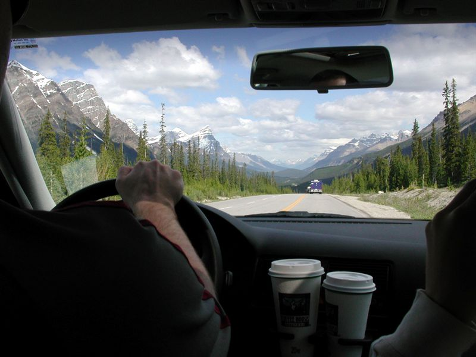
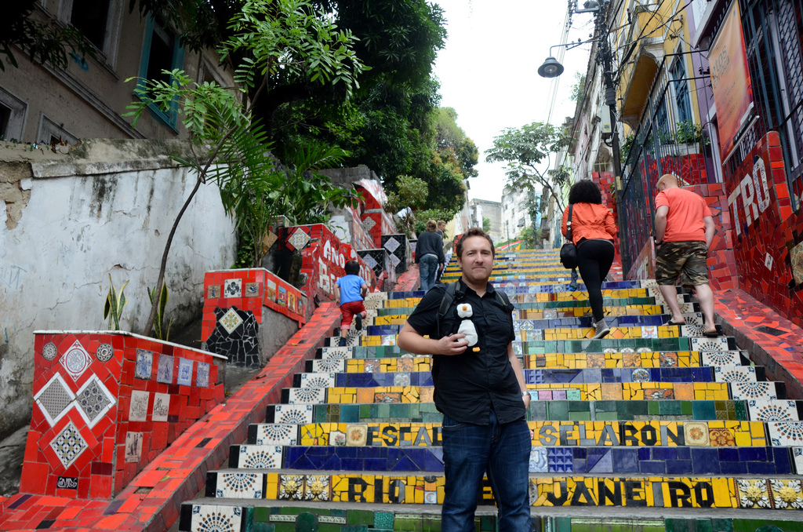

My Three Week Tour of North America
In just three days, I'll be heading to the airport again on what will undoubtedly be a great tour of North America. I'm meeting Luciana in Toronto, and her and I will slowly make our way via train to Québec City. From there we are going to head back to Ottawa for a weekend, then off to Banff, Lake Louise and hopefully Jasper. After a brief stop in Vancouver, we're going to head down to San Francisco for some San Francisco Giants baseball action, and hopefully a few winery tours.
 Driving in the Canadian Rocky Mountains
{kind=link}
Many of the places we are heading to are places I haven't spent much time in. While I've driven through Québec City before, I have never spent any time there and am looking forward to wandering the streets with Luciana (plus I need to get my yearly poutine fix in Québec). I also have never been to Napa Valley before, so doing a few winery tours in that part of California will be great.
 Me and Waddles in Brazil
{kind=link}
At the end of it all, I'm heading back to Brazil with Luciana for likely a few months. I made a few friends down there before that I'm looking forward to catching up with, and it sounds like I have a few new ones waiting for me when I arrive. So it's going to be a great adventure, and I'm looking forward to hitting the open skies again.